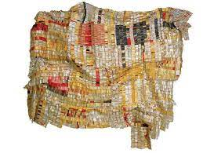

245. Old Man’s Cloth. El Anatsui. 2003 CE. Aluminum and copper wire
- Technique and Materials
- One thousand drink tops are joined by wire to form a cloth-like hanging
- Bottlecaps are from a distillery in Nigeria
- The artist uses power tools such as chainsaws and welding torches.
- The artist converts found materials into a new type of media that lies somewhere between painting and sculpture
- Recycling of found objects
- Form
- The work is not flat, but hung as cloth
- Curators are often left to hanging El Anatsuiś work to the best advantage; the work appears slightly different in each setting
- Context
- El Anatsui was born in Ghana; spent much of his career in Nigeria
- The artist produces colorful, textured wall hangings related to West African textiles
- The gold color reflects traditional cloth colors of Ghana and references royalty
- The gold also symbolizes Ashanti control over the hold trade in Africa
- El Anatsui combines aesthetic traditions of his home country of Ghana, his adopted country of Nigeria, and the global art movement of abstract art